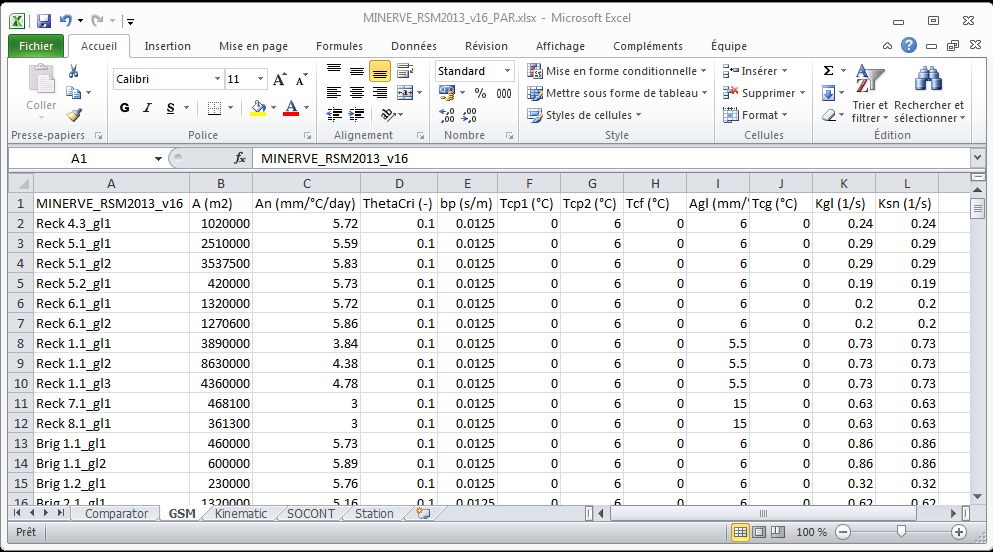
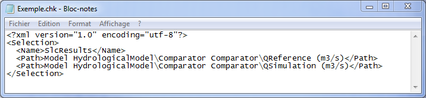

RS MINERVE generates model files saved in .rsm format as well as different other formats for results of configuration data.
13.1 Model files
Both Save and Export generate files of the same format (.rsm). With Save, the entire model is saved, whereas with Export, only the objects (submodels included) contained in the active hierarchical level are exported (refer to the Exportation of a submodel section in the User’s Manual).
13.2 Parameters and initial conditions files
Parameters (or initial conditions) of the model can be saved as:
Excel files (.xlsx). Each worksheet presents the parameters (or initial conditions) of one hydrological object, as presented in the example of Figure 13.1.
Text files (.txt). Each hydrological object is presented per line with its parameters or initial conditions

13.3 Object selection files
A selection of the objects data can be saved with the help of the “Selection and plots”. The exported selection is saved as a .chk file. The format of this file is presented in Figure 13.2. It contains:
the name of the selection (given by the user in the “Selection and plots”) in first line,
the number of selected series (second line),
all selections, with the name of the .rsm model, the name submodel (if it exists), the name of the selected object and its chosen series.

13.4 Exported results files
The results in the model selection can be also achieved from the “Selection and plots”. Several file formats are possible:
Excel file (.xlsx).
CSV file (.csv).
Aquatool input file (.apo), for use’s working with Aquatool DMA from UPV.
13.5 Calibration configuration files
The full configuration of the calibration, with information such as the selected objects, parameters to calibrate, or the objective function to take into account, is saved in a .cbt file.
13.6 Database files
The format of the database is explained in detail in Section 14. Databases contains two different files
Database files in text format (.dbt and .dbx) or in binary format (.dbb and .dbx).
Dataset files in text format (.dst and .dsx) or in binary format (.dsb and .dsx).
CSV files in text format (.csv).